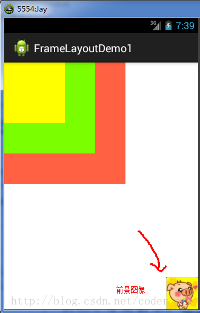
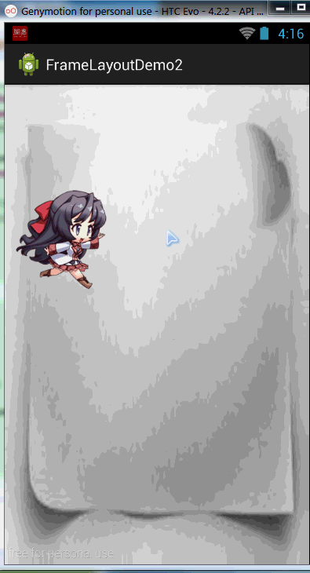
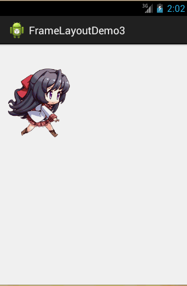

一、本节引言
FrameLayout(帧布局)可以说是六大布局中最为简单的一个布局,这个布局直接在屏幕上开辟出一块空白的区域,当我们往里面添加控件的时候,会默认把他们放到这块区域的左上角,而这种布局方式却没有任何的定位方式,所以它应用的场景并不多;帧布局的大小由控件中最大的子控件决定,如果控件的大小一样大的话,那么同一时刻就只能看到最上面的那个组件!后续添加的控件会覆盖前一个!虽然默认会将控件放置在左上角,但是我们也可以通过layout_gravity属性,指定到其他的位置!本节除了给大家演示一个最简单的例子外,还给大家带了两个好玩的例子,有兴趣的可以看看!
二、常用属性
FrameLayout的属性很少就两个,但是在说之前我们先介绍一个东西:
前景图像:永远处于帧布局最上面,直接面对用户的图像,就是不会被覆盖的图片。
两个属性:
android:foreground:*设置改帧布局容器的前景图像android:foregroundGravity:设置前景图像显示的位置
三、实例演示
1)最简单的例子
运行效果图：

实现代码如下：
<FrameLayout xmlns:android="http://schemas.android.com/apk/res/android"
xmlns:tools="http://schemas.android.com/tools"
android:id="@+id/FrameLayout1"
android:layout_width="match_parent"
android:layout_height="match_parent"
tools:context=".MainActivity"
android:foreground="@drawable/logo"
android:foregroundGravity="right|bottom">
<TextView
android:layout_width="200dp"
android:layout_height="200dp"
android:background="#FF6143" />
<TextView
android:layout_width="150dp"
android:layout_height="150dp"
android:background="#7BFE00" />
<TextView
android:layout_width="100dp"
android:layout_height="100dp"
android:background="#FFFF00" />
</FrameLayout>
代码解析: 很简单,三个TextView设置不同大小与背景色,依次覆盖,接着右下角的是前景图像,通过 android:foreground="@drawable/logo"设置前景图像的图片， android:foregroundGravity="right|bottom"设置前景图像的位置在右下角
2)随手指移动的萌妹子
效果图如下：

实现流程解析：
- step 1:先将
main.xml布局设置为空白的FrameLayout,为其设置一个图片背景 - step 2:新建一个继承
View类的MeziView自定义组件类,在构造方法中初始化view的初始坐标 - step 3:重写
onDraw()方法,实例化一个空的画笔类Paint - step 4:调用
BitmapFactory.decodeResource()生成位图对象 - step 5:调用
canvas.drawBitmap()绘制妹子的位图对象 - step 6:判断图片上是否回收,否则强制回收图片
- step 7:在主Java代码中获取帧布局对象,并且实例化一个MeziView类
- step 8:会实例化的mezi对象添加一个触摸事件的监听器,重写onTouch方法,改变mezi的X,Y坐标，调用
invalidate()重绘方法 - step 9: 将mezi对象添加到帧布局中
布局代码：main_activity.xml
<FrameLayout xmlns:android="http://schemas.android.com/apk/res/android"
xmlns:tools="http://schemas.android.com/tools"
android:id="@+id/mylayout"
android:layout_width="match_parent"
android:layout_height="match_parent"
tools:context=".MainActivity"
android:background="@drawable/back" >
</FrameLayout>
自定义的MeziView.java
package com.jay.example.framelayoutdemo2;
import android.content.Context;
import android.graphics.Bitmap;
import android.graphics.BitmapFactory;
import android.graphics.Canvas;
import android.graphics.Paint;
import android.view.View;
public class MeziView extends View {
//定义相关变量,依次是妹子显示位置的X,Y坐标
public float bitmapX;
public float bitmapY;
public MeziView(Context context) {
super(context);
//设置妹子的起始坐标
bitmapX = 0;
bitmapY = 200;
}
//重写View类的onDraw()方法
@Override
protected void onDraw(Canvas canvas) {
super.onDraw(canvas);
//创建,并且实例化Paint的对象
Paint paint = new Paint();
//根据图片生成位图对象
Bitmap bitmap = BitmapFactory.decodeResource(this.getResources(), R.drawable.s_jump);
//绘制萌妹子
canvas.drawBitmap(bitmap, bitmapX, bitmapY,paint);
//判断图片是否回收,木有回收的话强制收回图片
if(bitmap.isRecycled())
{
bitmap.recycle();
}
}
}
MainActivity.java:
package com.jay.example.framelayoutdemo2;
import android.os.Bundle;
import android.view.MotionEvent;
import android.view.View;
import android.view.View.OnTouchListener;
import android.widget.FrameLayout;
import android.app.Activity;
public class MainActivity extends Activity {
@Override
protected void onCreate(Bundle savedInstanceState) {
super.onCreate(savedInstanceState);
setContentView(R.layout.activity_main);
FrameLayout frame = (FrameLayout) findViewById(R.id.mylayout);
final MeziView mezi = new MeziView(MainActivity.this);
//为我们的萌妹子添加触摸事件监听器
mezi.setOnTouchListener(new OnTouchListener() {
@Override
public boolean onTouch(View view, MotionEvent event) {
//设置妹子显示的位置
mezi.bitmapX = event.getX() - 150;
mezi.bitmapY = event.getY() - 150;
//调用重绘方法
mezi.invalidate();
return true;
}
});
frame.addView(mezi);
}
}
代码解释: 见步骤,很简单,就是自定义一个View类,重写重绘方法,接着在Activity中为他添加一个触摸时间在触摸时间中重写onTouch方法获取点击焦点,另外还需要-150,不然那个坐标是自定义View的左上角,接着调用invalidate( )重绘方法,最后添加到帧布局中而已!
代码下载:FrameLayoutDemo2.zip
3)跑动的萌妹子
效果图如下：

实现流程:
- step 1:定义一个空的FrameLayout布局,将前景图像的位置设置为中央位置
- step 2:在Activity中获取到该FrameLayout布局,新建一个Handler对象,重写
handlerMessage()方法,调用图像- 更新的方法 - step 3:自定义一个move()方法,通过switch动态设置前景图片显示的位图
- step 4:在onCreate()方法中新建一个计时器对象Timer,重写run方法,每隔170毫秒向handler发送空信息
实现代码如下:
布局文件:main_activity.xml:
<FrameLayout xmlns:android="http://schemas.android.com/apk/res/android"
xmlns:tools="http://schemas.android.com/tools"
android:id="@+id/myframe"
android:layout_width="wrap_content"
android:layout_height="wrap_content"
android:foregroundGravity="center">
</FrameLayout>
MainActivity.java:
package com.jay.example.framelayoutdemo3;
import java.util.Timer;
import java.util.TimerTask;
import android.os.Bundle;
import android.os.Handler;
import android.os.Message;
import android.view.View;
import android.view.View.OnClickListener;
import android.widget.FrameLayout;
import android.app.Activity;
import android.graphics.drawable.Drawable;
public class MainActivity extends Activity {
//初始化变量,帧布局
FrameLayout frame = null;
//自定义一个用于定时更新UI界面的handler类对象
Handler handler = new Handler()
{
int i = 0;
@Override
public void handleMessage(Message msg) {
//判断信息是否为本应用发出的
if(msg.what == 0x123)
{
i++;
move(i % 8 );
}
super.handleMessage(msg);
}
};
//定义走路时切换图片的方法
void move(int i)
{
Drawable a = getResources().getDrawable(R.drawable.s_1);
Drawable b = getResources().getDrawable(R.drawable.s_2);
Drawable c = getResources().getDrawable(R.drawable.s_3);
Drawable d = getResources().getDrawable(R.drawable.s_4);
Drawable e = getResources().getDrawable(R.drawable.s_5);
Drawable f = getResources().getDrawable(R.drawable.s_6);
Drawable g = getResources().getDrawable(R.drawable.s_7);
Drawable h = getResources().getDrawable(R.drawable.s_8);
//通过setForeground来设置前景图像
switch(i)
{
case 0:
frame.setForeground(a);
break;
case 1:
frame.setForeground(b);
break;
case 2:
frame.setForeground(c);
break;
case 3:
frame.setForeground(d);
break;
case 4:
frame.setForeground(e);
break;
case 5:
frame.setForeground(f);
break;
case 6:
frame.setForeground(g);
break;
case 7:
frame.setForeground(h);
break;
}
}
@Override
protected void onCreate(Bundle savedInstanceState) {
super.onCreate(savedInstanceState);
setContentView(R.layout.activity_main);
frame = (FrameLayout) findViewById(R.id.myframe);
//定义一个定时器对象,定时发送信息给handler
new Timer().schedule(new TimerTask() {
@Override
public void run() {
//发送一条空信息来通知系统改变前景图片
handler.sendEmptyMessage(0x123);
}
}, 0,170);
}
}
代码解析: 代码也很简单,就是定义一个handler对象来刷新帧布局的前景图像,定义一个Timer定时器每隔170毫秒发送定时信息,i++;move(i%8);这里是因为我们使用8个图片作为动画素材！
代码下载:FrameLayoutDemo3.zip
四、本节小结
本节介绍了下FrameLayout(帧布局)，主要掌握foreground和foregroundGravity属性的使用即可！帧布局比前面的表格布局用得稍微多一点！有兴趣可以像笔者这样写点小例子试试！